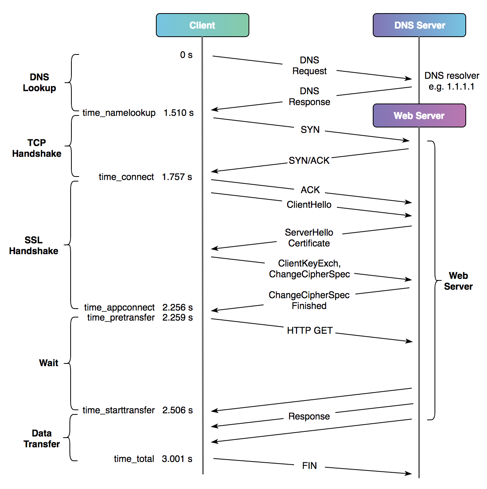

使用curl进行网站测速
网站访问可以分为下面几个阶段：
- DNS 域名解析
- 通过SSL协议交换密钥（HTTPS)
- 与服务端创建 TCP 访问连接
- 客户端发起请求
- 服务端收到请求并准备回应内容
- 服务端回复回应内容
当我们优化网站速度时通常要现确定哪个阶段是耗时大头。而令我感到惊奇的是，原来 curl 的 -w 选项可以让 curl 完成访问网站的操作后将各阶段的耗时情况（以及其他一些访问信息）输出到标准输出。
man curl 中关于 -w 选项的说明如下：
-w, --write-out <format>
Make curl display information on stdout after a completed trans‐
fer. The format is a string that may contain plain text mixed
with any number of variables. The format can be specified as a
literal "string", or you can have curl read the format from a
file with "@filename" and to tell curl to read the format from
stdin you write "@-".
The variables present in the output format will be substituted
by the value or text that curl thinks fit, as described below.
All variables are specified as %{variable_name} and to output a
normal % you just write them as %%. You can output a newline by
using \n, a carriage return with \r and a tab space with \t.
NOTE: The %-symbol is a special symbol in the win32-environment,
where all occurrences of % must be doubled when using this
option.
The variables available are:
content_type The Content-Type of the requested document, if
there was any.
filename_effective
The ultimate filename that curl writes out to.
This is only meaningful if curl is told to write
to a file with the -O, --remote-name or -o,
--output option. It's most useful in combination
with the -J, --remote-header-name option. (Added
in 7.26.0)
ftp_entry_path The initial path curl ended up in when logging on
to the remote FTP server. (Added in 7.15.4)
http_code The numerical response code that was found in the
last retrieved HTTP(S) or FTP(s) transfer. In
7.18.2 the alias response_code was added to show
the same info.
http_connect The numerical code that was found in the last
response (from a proxy) to a curl CONNECT
request. (Added in 7.12.4)
http_version The http version that was effectively used.
(Added in 7.50.0)
local_ip The IP address of the local end of the most
recently done connection - can be either IPv4 or
IPv6 (Added in 7.29.0)
local_port The local port number of the most recently done
connection (Added in 7.29.0)
num_connects Number of new connects made in the recent trans‐
fer. (Added in 7.12.3)
num_redirects Number of redirects that were followed in the
request. (Added in 7.12.3)
proxy_ssl_verify_result
The result of the HTTPS proxy's SSL peer certifi‐
cate verification that was requested. 0 means the
verification was successful. (Added in 7.52.0)
redirect_url When an HTTP request was made without -L, --loca‐
tion to follow redirects (or when --max-redir is
met), this variable will show the actual URL a
redirect would have gone to. (Added in 7.18.2)
remote_ip The remote IP address of the most recently done
connection - can be either IPv4 or IPv6 (Added in
7.29.0)
remote_port The remote port number of the most recently done
connection (Added in 7.29.0)
scheme The URL scheme (sometimes called protocol) that
was effectively used (Added in 7.52.0)
size_download The total amount of bytes that were downloaded.
size_header The total amount of bytes of the downloaded head‐
ers.
size_request The total amount of bytes that were sent in the
HTTP request.
size_upload The total amount of bytes that were uploaded.
speed_download The average download speed that curl measured for
the complete download. Bytes per second.
speed_upload The average upload speed that curl measured for
the complete upload. Bytes per second.
ssl_verify_result
The result of the SSL peer certificate verifica‐
tion that was requested. 0 means the verification
was successful. (Added in 7.19.0)
time_appconnect
The time, in seconds, it took from the start
until the SSL/SSH/etc connect/handshake to the
remote host was completed. (Added in 7.19.0)
time_connect The time, in seconds, it took from the start
until the TCP connect to the remote host (or
proxy) was completed.
time_namelookup
The time, in seconds, it took from the start
until the name resolving was completed.
time_pretransfer
The time, in seconds, it took from the start
until the file transfer was just about to begin.
This includes all pre-transfer commands and nego‐
tiations that are specific to the particular pro‐
tocol(s) involved.
time_redirect The time, in seconds, it took for all redirection
steps including name lookup, connect, pretransfer
and transfer before the final transaction was
started. time_redirect shows the complete execu‐
tion time for multiple redirections. (Added in
7.12.3)
time_starttransfer
The time, in seconds, it took from the start
until the first byte was just about to be trans‐
ferred. This includes time_pretransfer and also
the time the server needed to calculate the
result.
time_total The total time, in seconds, that the full opera‐
tion lasted.
url_effective The URL that was fetched last. This is most mean‐
ingful if you've told curl to follow location:
headers.
If this option is used several times, the last one will be used.
其中与时间相关的变量包括：
- time_namelookup
- DNS 解析时间，可以与
--resolve选项配合寻找最快的DNS - time_connect
- 与服务端创建好 TCP 连接的时间，严格来说是客户端回复 ACK 的时间。我们可以通过
time_connect - time_namelookup来大致推断网络延时。 - time_appconnect
- 完成 SSL/TLS 设置的时间，此时客户端与服务端完成密钥交换，客户端准备发起请求
- time_pretransfer
- 服务端收到请求的时间
- time_starttransfer
- 服务端准备好回应内容的时间。
- time_total
- 完成整个请求的所有时间
- time_redirect
- 若请求经过多次重定向，那么这个包含直到最后一次请求开始所耗的时间。
下面这张从 cloudflare 偷来的例子可以很直观的看出每个变量的对应关系
curl -so /dev/null -w "dnslookup: %{time_namelookup} | connect: %{time_connect} | appconnect: %{time_appconnect} | pretransfer: %{time_pretransfer} | starttransfer: %{time_starttransfer} | total: %{time_total} | size: %{size_download}\n" https://www.zasag.mn
其中 -s 表示进入 silent 模式， -o /dev/null 表示不显示获取到的文件内容
结果为：
dnslookup: 1.510 | connect: 1.757 | appconnect: 2.256 | pretransfer: 2.259 | starttransfer: 2.506 | total: 3.001 | size: 53107
图示如下： 